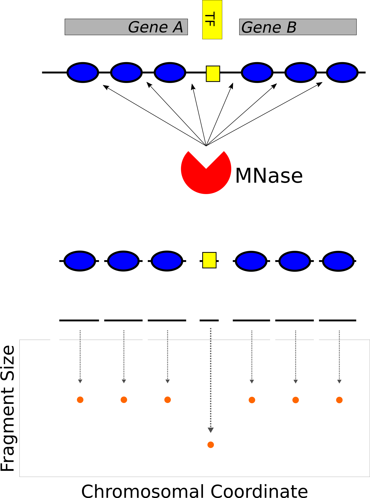

Disruption and repair of chromatin at a site-specifc DSB
Department of Pharmacology and Cancer Biology
Duke University School of Medicine
Kunkel 2019
Collaboration
Teaching
Local chromatin changes at replication origins

Belsky et al., Genes & Development, 2015
Chromatin assembly at the replication fork

Gutiérrez et al., Genome Research, 2019
Vinay's DSB


Vinay Tripuraneni, MSTP
Vinay's DSB

Vinay Tripuraneni, MSTP
Broad nucleosome eviction surrounding a DSB

Tsukuda et al., Nature 2005
MNase 'footprinting' the genome

Henikoff et al., PNAS 2012; Belsky et al., G&D 2015
MNase 'footprinting' the genome

Henikoff et al., PNAS 2012; Belsky et al., G&D 2015
Chromatin occupancy profiling
Chromatin occupancy profling

Introduction of a site-specific break at PHO5
Introduction of a site-specific break at PHO5

Introduction of a site-specific break at PHO5